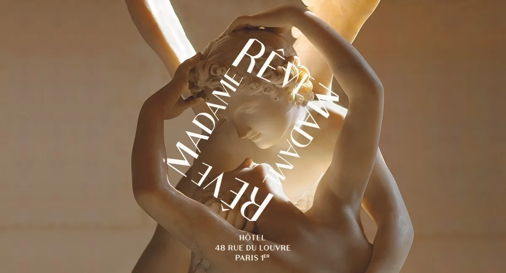
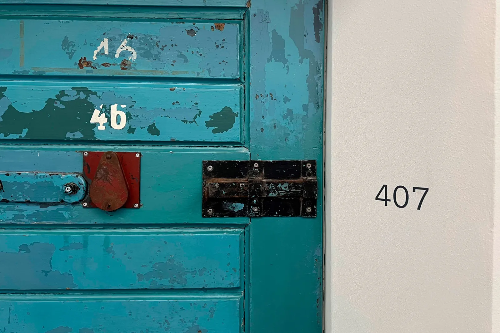
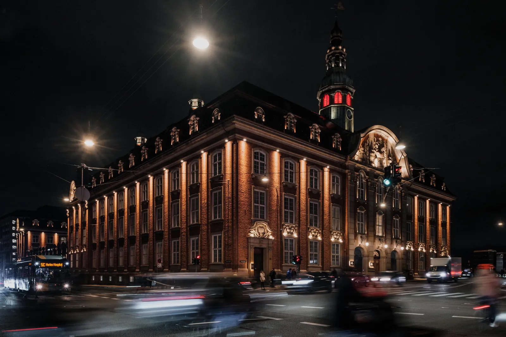
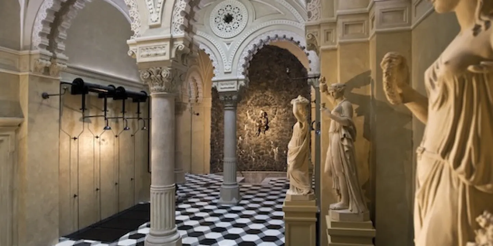

Character Stays · Europe · 2026
Every great sleep was something else first.
Quick verdicts
Once-in-a-lifetime splurge
Aman Venice (Tiepolo frescoes, Grand Canal, Three Michelin Keys) or Palazzo Talìa, Rome (Guadagnino-designed, Two Keys).
Design-forward, mid-budget
Villa Copenhagen, Ett Hem Stockholm, or Wilmina Berlin — all Michelin-listed, all under the palazzo price tier.
Most theatrical
The Witchery by the Castle, Edinburgh — gothic tower at the castle gates, named for the witches burned on the adjacent hill.
Character under €200
Skip flagship cities. Five-star stays under €163/night in Zaragoza, Wrocław, Tirana, Riga, Tallinn.
The Conversion Atlas
Across 19 cities the pattern is consistent: the most distinctive place to sleep was rarely built as a hotel. Four conversion types account for almost every entry on this map.
2
Judicial & Correctional
NoMad London Bow Street Magistrates' Court, 1881 — held Oscar Wilde before trial
Wilmina Women's Prison & Courthouse, Berlin 19th c. — listed walls intact · ⚿ One Key
2
Post Office
Hôtel Madame Rêve Louvre Post Office, Paris 1888 — Haussmannian ironwork hall · ⚿ One Key
Villa Copenhagen Danish Central Post Office — century-old façade, rooftop pool
7
Thermal, Civic & Cultural
Rácz Hotel Turkish Bath, Budapest 16th c. — own hot spring · 5 pools
Hotel Rival Art Deco Cinema 1937, Stockholm — ABBA's Benny Andersson
Apotek Hotel State Pharmacy 1917, Reykjavík — by Hallgrímskirkja's architect
18+
Palace & Palazzo
Aman Venice Palazzo Papadopoli, Grand Canal 16th c. — Tiepolo frescoes · ⚿⚿⚿
Portinari Salviati Florence 13th c. — Dante's muse, Medici · ⚿⚿ Two Keys
Palazzo Talìa Rome 16th c. — Guadagnino-designed · ⚿⚿ Two Keys
Full Register
Unlike the canonical city-by-city guide, this register organises by what the building used to be — useful if you're drawn to a conversion type rather than a destination.
| City | Former life | Est. | Hotel | Keys | From |
|---|---|---|---|---|---|
| Judicial & Correctional | |||||
| London | Bow Street Magistrates' Court | 1881 | NoMad London | — | — |
| Berlin | Women's Prison & Courthouse | 19th c. | Wilmina | ⚿ 1 Key | — |
| Post Office | |||||
| Paris | Louvre Post Office | 1888 | Hôtel Madame Rêve | ⚿ 1 Key | — |
| Copenhagen | Danish Central Post Office | c.1912 | Villa Copenhagen | Michelin | — |
| Thermal, Civic & Cultural | |||||
| Barcelona | Cotton Producers' Guild HQ | 19th c. | Cotton House Hotel | — | — |
| Berlin | Factory | early 20th c. | Michelberger Hotel | — | €100+ |
| Budapest | Domed Turkish Bath | 16th c. | Rácz Hotel & Thermal Spa | — | — |
| Lisbon | Convent | 17th c. | Locke de Santa Joana | — | — |
| Porto | Romantic-era Mansion | 1861 | Torel Palace Porto | — | $115+ |
| Reykjavík | State Pharmacy | 1917 | Apotek Hotel | — | — |
| Stockholm | Art Deco Cinema | 1937 | Hotel Rival | — | SEK 2,276+ |
| Canal House | |||||
| Amsterdam | 25 canal houses | 17th–18th c. | Pulitzer Amsterdam | — | €285+ |
| Palace & Palazzo | |||||
| Budapest | Gresham Life Assurance, Art Nouveau | 1906 | Four Seasons Gresham Palace | — | — |
| Budapest | Drechsler Palace, neo-Renaissance | 1886 | W Budapest | — | — |
| Dublin | Georgian Townhouses | 18th c. | The Merrion | — | €320+ |
| Edinburgh | Gothic merchant's building | ~1595 | The Witchery by the Castle | — | £700+ |
| Florence | Palace (Dante's muse, Medici) | 13th c. | Palazzo Portinari Salviati | ⚿⚿ 2 Keys | €560+ |
| Florence | Renaissance palazzo | 15th c. | Four Seasons Firenze | ⚿⚿⚿ 3 Keys | — |
| London | Art Deco landmark | 1856 | Claridge's | ⚿⚿⚿ 3 Keys | £840+ |
| Madrid | Grand Palace | 19th c. | Hotel Único Madrid | — | €364+ |
| Rome | Collegio Nazareno (oldest scholastic inst.) | 16th c. | Palazzo Talìa | ⚿⚿ 2 Keys | €500+ |
| Stockholm | Arts & Crafts townhouse | 1910 | Ett Hem | Michelin | — |
| Venice | Palazzo Papadopoli, Grand Canal | 16th c. | Aman Venice | ⚿⚿⚿ 3 Keys | €1,000+ |
| Venice | Noble Palace, Grand Canal | 1475 | The Gritti Palace | ⚿⚿ 2 Keys | €1,000+ |
| Vienna | Art Nouveau, Alfred Keller | 1908 | Mandarin Oriental Vienna | — | — |
| Vienna | Ringstrasse grand hotel | 1876 | Hotel Sacher | ⚿⚿⚿ 3 Keys | €515+ |
Dossier
Each one carries a story that the building's exterior still tells — the widest possible spread of former lives.

Post Office · Paris · 1888
Before
Louvre Post Office
1888 – closed 2015
The grandest Haussmannian post office in France — its soaring ironwork sorting hall now a hotel atrium. Laurent Taïeb's restoration preserved the original architecture while Andrée Putman's design influence shapes every room. The rooftop bar frames a direct Eiffel Tower sightline. Michelin's inspectors awarded it One Key on the inaugural 2025 global list; Mr & Mrs Smith has had it on their hand-reviewed register since opening. [13][21]

Prison · Berlin · 19th century
Before
Women's Prison & Courthouse
19th c. – decommissioned
Grüntuch Ernst Architects preserved the entire listed perimeter wall and the prison yard — the building reads as institutional from the street, which is architecturally the point. 44 rooms within. Berlin's most subversive character stay, and arguably its best value Michelin Key property.[57]

Post Office · Copenhagen · c.1912
Before
Danish Central Post Office
c.1912 – 2010s
A century-old post office façade intact; behind it, 390 rooms and a year-round heated rooftop pool that sits directly atop what were once the sorting halls. Vesterbro neighbourhood — steps from Tivoli, the city's best food strip alongside.[60][61]

Turkish Bath · Budapest · 16th century
Before
Ottoman Domed Turkish Bath
16th c. – continuously used
The hotel is literally built around the 16th-century Ottoman dome, still fed by its own geothermal spring. Five pools, saunas, steam rooms — the thermal circuit isn't a modern wellness addition but the building's original and continuous purpose, unchanged in principle for 500 years. Note: neighbouring Gellért is closed until at least 2027 (Mandarin Oriental conversion).[54]
Gothic Merchant's House · Edinburgh · ~1595
Before
16th-century merchant's tenement
~1595 – occupied continuously
Named for the hundreds of witches burned on adjacent Castlehill. Gilded ceilings, antique four-posters, freestanding tubs — no two suites alike. The restaurant has occupied this spot since 1979 and is the only dining room named after witch trials that actually warrants the theatre. The most theatrical stay in the British Isles.[69]